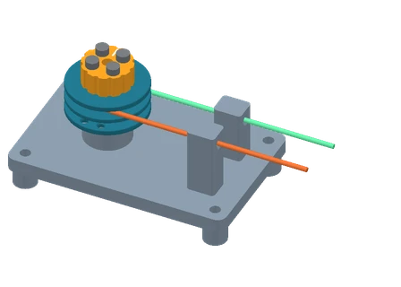

Проверка намотки
барабана B04
Поверните барабан и проследите, как одна канавка выбирает трос, пока другая отдаёт ту же длину.

Сборка в нейтрали · ручной приводДве ветви на одном валу
Обе канавки вращаются вместе. Метки на свободных участках показывают перемещение относительно середины прогона.
Как рассчитаны ход и углы
При рабочем радиусе 12 мм ход каждой ветви равен радиусу, умноженному на угол барабана в радианах. Изменение угла колена вычисляется для сектора радиусом 31,5 мм без люфта, упругости и проскальзывания.
±90° — предложенный диапазон первого ручного прогона. Проверьте посадку тросов, положение входов и свободных хвостов на реальной сборке до расширения диапазона. Вид со стороны маховика. Положительный угол отсчитывается против часовой стрелки. Оба выхода направлены вдоль +X. Сплошная точка обозначает выбранный на схеме вход троса (30° для A и 240° для B), кольцо — соседнее отверстие (60° и 210° соответственно). Способ заделки хвоста ещё предстоит выбрать и проверить на образце E01. В среднем положении дуга до рабочей проушины составляет 165°, до середины пары — 180°. При условном прогоне 315° остаётся сектор 45°. Сами входы занимают 45,58° в проекции, а с учётом радиуса троса — 54,10°. Для свободного участка от касательной до направляющей (X от 0 до 42 мм) при ±90° расчётный зазор в проекции XY около 5,62 мм. При |θ| ≈ 117,09° расчётный зазор в плане обращается в ноль, а при ±120° проекции перекрываются примерно на 0,50 мм. Физический зазор зависит от укладки по высоте и требует проверки на стенде.
Стенд в том же положении
Светлая риска показывает ноль. Барабан и рукоятка вращаются вместе, направляющие закреплены на плите. Расчётные ветви заканчиваются у выбранных проушин. Форму заделки проверяют на образце E01.
Сборка и детали стенда
Для пробы заделки начните с образца E01. Для стенда нужны основание, рукоятка, четыре втулки и барабан B04. Покупные детали перечислены в инструкции.
Журнал ручного прогона
При θ = 0° сделайте по отметке на свободных ветвях A и B у неподвижной линейки. На каждом краю прогона измерьте сдвиг от этой отметки. В карточке 0° запишите сдвиг после возврата в середину.
Все значения в миллиметрах. Отклонение равно измеренному сдвигу минус расчётный. Введите число с учётом направления, например −18,5. Пустое поле означает, что замера пока нет.